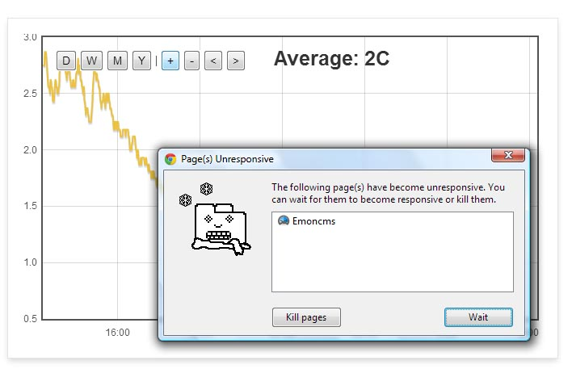

Anyone else having problems with Chrome browser crashing when viewing chart data in emoncms?
Emoncms is hosted on my Raspberry Pi, and I'm running Google Chrome 'Version 25.0.1364.172 m' on Windows Vista which crashes whenever I load visualizations. It is usually very stable...

Re: Google Chrome crashing
Click [Wait] and allow the moderately powered PI to serve up the full graph data.
I don't think you are seeing a fault as such, only Chrome warning you that the page is slow to load.
Others have asked how we might configure the graphs to default to a one day (today) view rather than a week.
This would help speed up page loads and minimize these warnings.
Re: Google Chrome crashing
It definitely crashes, as even waiting 10 minutes does not restore the page functions.
The only way to restore it is to kill the tab and reload.
Paul
Re: Google Chrome crashing
Have you checked to see how big your MySQL database file is Paul? Mine reached nearly 1G and EmonCMS ground to a halt.
I posted about it here but didn't really get any response. I now have a script that keeps the database trimmed to 1 month of data.
Re: Google Chrome crashing
Martin, there is only 10 days worth of data (2 feeds) on a fresh installation, so unlikely to be that. I am interested in your script though because database size does not appear to be addressed in the current system, and is a concern, especially when I get the energy monitoring feeds connected as well.